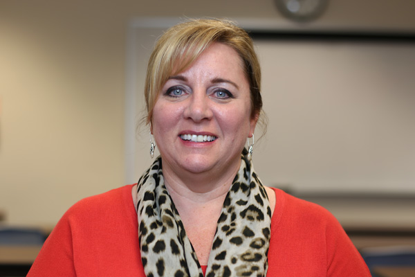
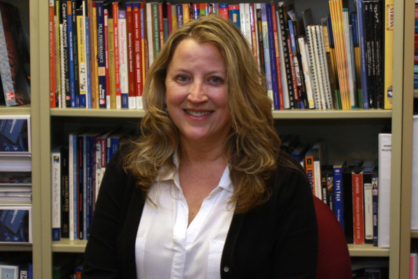

PROGRAMS: BUSINESS ADMINISTRATION - ACCOUNTING
Two-Year Associate in Specialized Business (ASB) Degree Program
Have a “head for numbers?” The South Hills Business Administration—Accounting program is perfect for you! No office or company can thrive without a competent, confident numbers person. In just two years, The BAA program at South Hills will teach you to be that person. As a student in Business Administration—Accounting, you will study cost accounting, financial statement preparation and analysis, and income taxes. Using the latest Accounting technology, South Hills will prepare you to hit the ground running and be a valued part of your employer’s bottom line.
Our BAA graduates find career opportunities including Staff Accountant, Accounting Manager, Bookkeeper, Accounting Clerk, Accounts Payable/Receivable Clerk, Payroll Clerk, Administrative Assistant and Controller.
Successful students in this program should enjoy mathematics and problem solving. Analytical skills are a big plus.
Meet the Faculty

Brenna Shutika
BAA Program Coordinator / Full-time Instructor

Wendy Eismont
Full-time Instructor